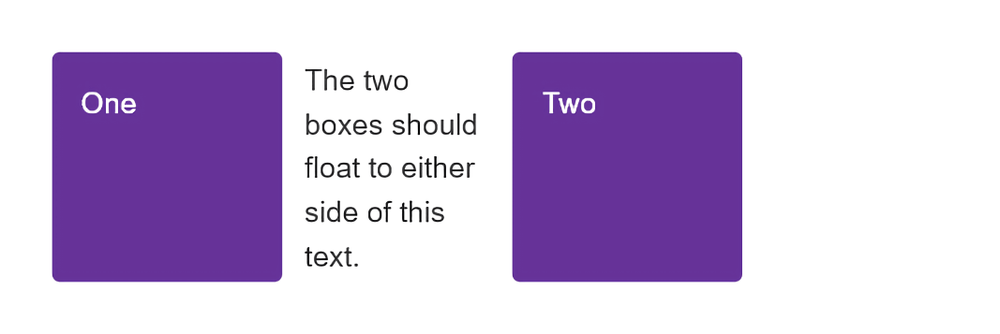
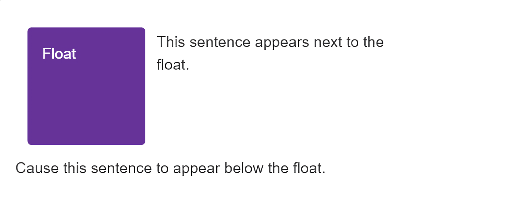
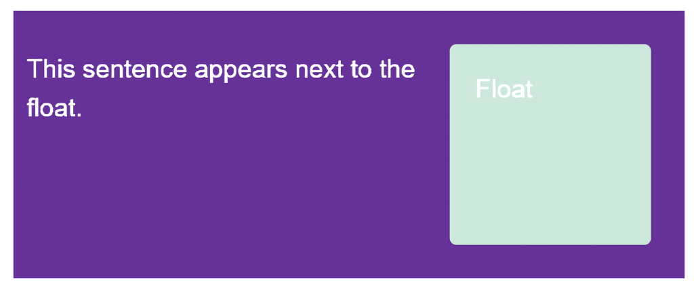

The aim of this task is to get you working with the CSS {{CSSxRef("float")}} and {{CSSxRef("clear")}} properties covered in our lesson on Floats. You will be working through three small tasks which use different elements of the material you have just covered.
Note: You can try out solutions in the interactive editors below. However, it may be helpful to download the code and use an online tool such as CodePen, jsFiddle, or Glitch to work on the tasks.
If you get stuck, then ask us for help — see the {{anch("Assessment or further help")}} section at the bottom of this page.
In this task, you need to float the two elements with a class of float1 and float2 left and right, respectively. The text should then appear between the two boxes, as in the image below.

Try updating the live code below to recreate the finished example:
{{EmbedGHLiveSample("css-examples/learn/tasks/float/float1.html", '100%', 700)}}
For assessment or further work purposes, download the starting point for this task to work in your own editor or in an online editor.
In this example, the element with a class of float should be floated left. Then we want the first line of text to display next to that element, but the following line of text (which has a class of .below) to display underneath it. You can see the desired result in this image.

Try updating the live code below to recreate the finished example:
{{EmbedGHLiveSample("css-examples/learn/tasks/float/float2.html", '100%', 800)}}
For assessment or further work purposes, download the starting point for this task to work in your own editor or in an online editor.
Finally, we have a floated element in this example. The box wrapping the float and text is displaying behind the float. Use the most up-to-date method available to cause the box background to extend to below the float, as in the image.

Try updating the live code below to recreate the finished example:
{{EmbedGHLiveSample("css-examples/learn/tasks/float/float3.html", '100%', 800)}}
For assessment or further work purposes, download the starting point for this task to work in your own editor or in an online editor.
You can practice these examples in the interactive editors mentioned above.
If you would like your work assessed, or are stuck and want to ask for help: